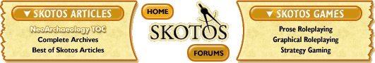

|
It's Based on Actual Math!by Noah Gibbs Building online text games is a big undertaking. Laurel Stuart talks about it in "Be A God With Me. Shannon Appelcline talks about it in The Wilderness of Your Intuition. Let's look at just how big, and how that compares to writing books or stories. Skotos originally said that building a game like Castle Marrach was like writing a novel. Jeff Crook said it was like writing a novel if you'd never written one before. That makes a lot of sense. You don't just need to write that much good prose, you need to figure out a whole new genre. Wait a minute. Write that much prose? But a Grand Theater is only 30-50 rooms, right? If that's your reaction, you're probably used to the usual set of free MUDs, MUSHes or MOOs. Objects are BigIf you've read Shannon's Building Blocks articles or played some Castle Marrach, you know that objects in Castle Marrach have long, well-written descriptions. You may also have noticed that they have lots of details. Each detail is a sub-object with its own properties. This means that for every object you see in a room, there's a lot going on underneath. Let's do a little math. Shannon's Building Blocks articles have an example object or two. An example sword might have hilt, pommel and blade as details. For the sword, that's a little more than a page of text. It has simple descriptions for the details, half-line descriptions of feel and taste and whatnot, and a few lines for the game about what you can or can't do to it. An example anvil might have a hardy hole, a pritchell hole, a base, a flat top, a horn, and maybe a couple of related bits. The anvil is probably about three pages of text when you include the details. I'm measuring pages of text because we want to find out just how 'big' a task it is to create a Skotos-sized text game. There are a Lot of ThemA room like a large kitchen might have over fifty assorted objects. Cutting boards, knives, spoons, chef's hats... Remember that a real-life kitchen will have far more than that. An in-game blacksmith shop probably has an anvil, several different kinds of hammers, straw on the floor, chisels, tongs, and the details of the shack -- at least ten or fifteen various objects. Also, remember that some objects, like the anvil, will have their own sub-details. Let's say a good room should have about fifteen objects that are specific to it, and an object is about two pages of text. So a room should be about thirty pages. That means one room will require as much raw prose as a short story. Ten high-quality rooms would be a small novel. And that 40-room Grand Theater, if most rooms were as interesting as a kitchen or a smithy, would be the size of "The Lord of the Rings". That's if you make no objects with fun coded behaviors, and if your game engine already does absolutely everything you want it to. How People Fake ItIf you're used to the world of free MUDs, you may be scoffing. You've seen huge worlds, hundreds or thousands of rooms, which certainly didn't take a decade to build. But think about quality: most of those rooms probably have about four lines of description and no further details. In other words, every six rooms or so is a single page of text. A 600-room world is about a hundred pages. So a 600-room world made of bare, sparse rooms takes about the effort of three of the full-quality rooms above. That's why you see so many MUDs with thousands of rooms, only a few hundred unique objects, and no details (or local equivalent) at all. Everybody fakes it somewhat. You don't want to have to write Tolkien's life work for the next Castle Marrach. So not every room really has twenty unique objects. Not every object is an anvil. Castle Marrach avoids having more than a few portable objects, partly to save all that building (remember the kitchen?). Mainly, it's important to make sure that common descriptions can be re-used. Data inheritance, a library of common objects, Skotos Active Markup, even cut and paste -- do everything you can to reduce the amount of text you have to write. If doing all those things saves you thirty percent of the writing you'd do otherwise, that may still be hundreds of pages. And that means it's well worth spending some programmer time to save some writer time. Skotos has already made those optimizations. If you use their engine then you get those optimizations, which is one reason to send your game proposals to Skotos instead of writing it yourself. If, instead, you're building your own game engine, it's a reason to study Skotos carefully. In a future column (I'm thinking four weeks) I'll talk about these labor-saving contrivances. And you can read a past column or two of Shannon's about data inheritance to prepare yourself, if you haven't already. In the mean time, remember the basic math. If you want good, powerful descriptions and really complex settings, be prepared to write thirty pages of text for every room. Some of the Skotos projects have given rules of thumb like "four to five hours for every room", and now you know why. So be prepared to work hard, or to cut corners. Also, be sure you know what the most important parts of your setting are. Since you now know you'll have to cut corners somewhere it's important to know where you should absolutely not take the easy way out. Next, we'll follow up on current MUD codebases and how they're licensed. See you in two weeks! [ <— #1: Toys in the Attic | #3: Got a License for That? —> ]
|